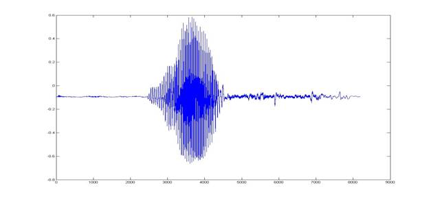

Introduction
Our project aimed at developing a Real Time Speech Recognition Engine on an FPGA using Altera DE2 board. The system was designed so as to recognize the word being spoken into the microphone. Both industry and academia have spent a considerable effort in this field for developing software and hardware to come up with a robust solution. However, it is because of large number of accents spoken around the world that this conundrum still remains an active area of research. Speech Recognition finds numerous applications including health care, artificial intelligence, human computer interaction, Interactive Voice Response Systems, military, avionics etc. Another most important application resides in helping the physically challenged people to interact with the world in a better way.
We implemented a Real Time Speech Recognition Engine that takes as an input the time domain signal from a microphone and performs the frequency domain feature extraction on the sample to identify the word being spoken. Our design exploits the fact that most of the words spoken across various accents around the world have some common frequency domain features that can be used to identify the word. Speech Recognition has always been a conundrum and a point of keen interest for researchers all around the globe. While various methodologies have been developed to solve this issue, it still remains an unsolved, nevertheless an intriguing problem.
Principles Involved
Speech Recognition Principle
Speech recognition systems can be classified into several models by describing the types of utterances to be recognized. These classes shall take into consideration the ability to determine the instance when the speaker starts and finishes the utterance. In our project we aimed to implement Isolated Word Recognition System which usually used a rectangular window over the word being spoken. These types of systems have "Listen/Not-Listen" states, where they require the speaker to wait between utterances.
A desktop microphone usage shall not be appropriate for realization of the project since they tend to pick up more ambient noise that gives might not be appropriate for accurate detection of speech. The usage of headset styled microphone allows the ambient noise to be minimized. Since the Speech Recognition is heavily dependent on processing speed because of a large amount of signal processing, implementation of the same on an FPGA was a good choice and motivation behind this project. Also, the memory available on Altera DE2 Development board was enough to easily and successfully implement the design for a word of length nearly 1 second.
The Speech Recognition Engines are broadly classified into 2 types, namely Pattern Recognition and Acoustic Phonetic systems. While the former use the known/trained patterns to determine a match, the latter uses attributes of the human body to compare speech features (phonetics such as vowel sounds). The pattern recognition systems combine with current computing techniques and tend to have higher accuracy.
Data Acquisition
The speech signal is essentially analog in nature. Hence, the signals must be converted to digital data in order to be read and processed. We used an inbuilt ADC using the Wolfson Codec to sample our signal at 8 KHz frequency thus producing a 16 bit signed digital output. Once the word was known to be detected, we acquired the FFT over the next 32 blocks of data and read their power coefficients in Nios II.
Detection
The very next issue to be addressed was to detect whether the word was being spoken. Hence, we used the FFT Module which output the source_exp signal which is a signed block exponent which accounts for the internal signal values during FFT computation. We experimentally decided to settle down on a value for this 6 bit signals to detect whether a word was being spoken or not and to trigger the computations in Nios II Processor.
Feature Extraction and
Transformations
a)
Mel
Frequency Cepstrum
Mel Frequency Analysis of speech is based on perception in which the filter bank is used to concentrate only on certain perceptible frequency ranges. Mel-Frequency Cepstrum (MFC) is a representation of the short-term power spectrum of a speech, based on a linear cosine transform of a log power spectrum on a nonlinear mel scale of frequency. The mathematical relation between the frequency domain and mel scale can be given as:
m = 2595 * log10(1 + f./700);
The triangular mel-filters in the filter bank are placed in the frequency domain so that each filter's center frequency follows the mel scale so that each filter bank represents different perceptual effect for different frequency bands. MFCCs combine consideration of aspects of human hearing (logarithmic frequency perception, the mel scale).
b)
Performing
Discrete Cosine Transform on Mel Cepstrum
A DCT computes a sequence of data points in terms of summation of cosine functions oscillating at various frequencies. The idea of performing DCT on Mel Scale is rather difficult to imagine on what the transformations might look like physically, however, we understood the applied mathematics behind the motive to extract speech frequency domain characteristics. Hence, we further need to use the computation of DCT on 12 point Mel Scale in software implementation. We decided to perform only a 12 point transform as that gave us considerably good results for identification of one word. Since most of the information after performing a DCT resides in the first two coefficients, we used these two to identify the word being spoken. After obtaining a DCT for each chunk of 32 ms of the speech signal, an algorithm to find the shortest distance match for the sequence of these 32 blocks is to be done.
Top Level Design
Our
project idea was highly motivated by the current trends going in this field of
research. While most of the Speech Recognition solutions are present in
software, implementation of the same in hardware required a sound background of
mathematical analysis and signal processing. We did a background research for
the project and designs used by other researchers to implement an engine on
hardware. While we used MATLAB code to generate and verify our approach, most
of the time in the project went in debugging the hardware and gaining
synchronization between the various hardware modules and the Nios II processor.
We extensively studied the transformations which are needed to be performed on the speech sample in order to derive a characteristic to identify a word. Because of the reason that speech could vary amongst different people, it was initially unclear whether the speech features would be speaker independent or dependent. So, we referred to some text as acknowledged at the end of the report to decide the approach we needed to use.
Since
the project involved a large amount of computation and mathematical analysis,
using hardware for the same would have been quite difficult. Initially we
intended to implement all the transformations in hardware by writing various
modules in Verilog for an FPGA. However, due to increased amount of complexity
we settled on performing operations up to finding the DFT of the signal in
hardware and using NIOS II Processor to perform the other transformations by
running a C code. This hurt our time performance, however, it helped us in
improving the design and in debugging the project significantly.
The top level working of our system can be
visualized in the following manner. The system takes the input from the
microphone and feeds it to the ADC which is sampling at 8KHz. The ADC output is
interfaced to a 256x16 bits memory. The memory stores a 32ms chunk of voice and
outputs it to the FFT module which computes the FFT of that voice chunk. The
FFT module is interfaced with the NIOS which reads the FFT outputs and it
checks whether the voice chunk corresponds to silence or a speech signal. If it
detects a speech signal, it stores the next 32 chunks of voice (which
corresponds to 1.024s(32ms*32) of voice). After it stores the 1 second of
voice, it perform various computations like normalization, feature extraction,
comparison etc. and checks if the spoken word corresponds to any of the
predefined command. If it finds a match it takes the action corresponding to
that particular command.
The following block diagram represents the
overall system:

In case of a word spoken, we store the FFT
of the 1.024 seconds of the voice signal and pass it to the NIOS-II and store
the samples in the SDRAM. The C code then treats this input as an array and
performs feature extraction and distance comparison on this input array to
check whether it matches with any of the predefined command. If so, it sends
out a matching signal which are indicated by the hardware.
Hardware Implementation
Following
diagram represents the hardware design used:
DE2 Board
The code was implemented using Altera Cyclone II board or DE2 FPGA Board. Beyond the FPGA, the board includes a number of peripherals and different types of memory. The FPGA is programmed through the USB blaster port using Quartus II software.
TOP LEVEL MODULE
The Verilog Top level module connects and synchronizes the NIOS-II, Memory controller and FFT controller. Apart from this, it also interfaces with the ADC_DAC module and the I2C Bus Controller. In order to properly generate the required clock signals for the NIOS, DRAM and AUDIO_CODEC, it uses 2 PLLs which are inbuilt in the DE2 board.
Memory Module
In our implementation, we used minimal amount of memory in the hardware. The memory is used only to store 32ms of voice before its FFT is done. As the sampling frequency used is 8KHz, a total of 256 samples are taken in a timeframe of 32ms. Therefore we implemented a memory of size 256x16bits. The memory control signal is interfaced to NIOS, so that the NIOS CPU is able to synchronize the input to memory and is able to keep the Memory module in wait state while the NIOS CPU does the computation. When the memory completes loading 32ms chunk, it signals the FFT module, so that the module can perform the appropriate operation.
FFT Module
In order to map the input voice from time domain to frequency domain, the Altera IP Megacore FFT module is used. The module is configured so as to produce a 256-point FFT. It takes data input in natural order, and output the transformed data in natural order. In the megafuncion parameterization of the FFT module, we tried out various architectures for the fft, i.e. Burst, Buffered Burst, Streaming and Variable Streaming. It turns out that the Burst architecture was most efficient as per our implementation.
The FFT module contains 256x16 bits of memory in order to store the FFT output. The memory is running at the same clock as the FFT and is also interfaced to the NIOS-II. The completion of FFT operation is indicated to the NIOS through a PIO named fftcomlpete. When the NIOS senses the fftcomplete signal, it checks for the ‘exp’ value, and reads the FFT output from the FFT memory and stores it in the SDRAM.
Miscellaneous
We changed the ADC sampling frequency to 8KHz from the default value of 48 KHz from the Wolfson audio codec. The codec was provided by Prof. Bruce Land.
Software Implementation
We choose “NIOS-II/f” processor with 4kb
data cache, 4kb instruction cache, Level 2 debugger and an integrated floating
point multiplier. Since most of the audio computation is done in the software
and the voice samples are stored in the SDRAM, the systems required a higher
memory. We interfaced an 8 MB SDRAM with the NIOS. Since most of the operations
were floating point, we enabled hardware floating point multiply and divide in
the CPU architecture. We interfaced LCD, Switches, LEDs
and Keys with the NIOS through the PIOs. The clock
frequency used for the NIOS was 50MHz.
Hardware Interface
The NIOS was interfaced with the Top level
module, FFT Module, and Memory Module.
The PIO (parallel input output) connected to the NIOS are the following:
- iFFTComplete: Indicate the completion of the FFT operation.
- iFFTCoeff: it contains the value of the FFT coefficient.
- iFFTLevel: It is connected to source_exp signal of FFT and indicate the voice level and is used to detect the silence.
- oFFTAddress: Indicates the address of the FFT memory from which NIOS reads the FFT coeff
- oFFTStart: output signal by NIOS to synchronize the start of the FFT operation
- iSwitches: input from various switches on the DE2 board.
- oKeys: input from various keys on the DE2 board.
- oLEDR: output signal to the red LEDs
- LEDG: output signal to the green LEDs
The SOPC builder used is as shown below:
NIOS C Program
We used the “NIOS II Software Build Tools
for Eclipse” software for writing our C program. The C program executes our
algorithm for the speech recognition. We have included the complete code in the
code listing section. The overall operation of the code can be described as
follows.
The code is executing an infinite loop as it’s always either expecting the input or processing it. It initiates start by giving the fftstart signal which starts the memory loading and the FFT operation. It keeps checking the fftcomplete signal to detect the end of the FFT operation. Once the FFT is complete it make the fftstart signal low so that the FFT values stored in the FFT memory doesn’t change before it copies the values to SDRAM. It then checks for the fftlevel signal to check whether a significant level of input is present of the MIC input and so as to indicate the start of the voice command. We found out experimentally that the value of fftlevel greater than 60 corresponds to an actual voice command, while the value below this represent either silence or the noise.
Once we detected the start of the command, we continuously stored the FFT output of next 32 chunks of voice sample which each chunk being 32ms. We store these values in a large array named fftcoeff of size 8192. This is performed through a for loop iterating for 32 cycles and performing the above operation of initiating the FFT module and then storing the FFT output into the fftcoeff array at appropriate location. Now, we have got the power spectrum of the word which has been spoken. We will now do the feature extraction and determine the word spoken.
First step is to convert the spectrum to the mel scale. We defined the melcepstrum_conversion function which converts the input power spectrum to the mel scale. We extracted 12 coefficients from this spectrum. We pass the as input the fftcoeff array, and output the mel array. The C module does the shifting as described in the theory section. We did the mel shifting for the entire 1 sec speech instead of 32ms chunks of speech. It would have been more efficient to do separate mel shifting for each of the 32ms but would have required a sophisticated synchronization and nevertheless wasn’t required for the operation which we are trying to achieve.
Next step is to compute the discrete cosine transform of these spectral points and obtain the MFCCs. We defined the dct function which takes the input as the mel array(12 coefficients) and outputs the mfcc array(12 coefficients).
Next we identify the spoken word based on the DCT coefficients. Since the first two coefficients contain the maximum information we took the sum of first two coefficients of the dct output and store it in the variable named sum_mel. Since in our implementation we are differentiating between the words ‘Yes’ and ‘No’, we experimentally noticed that this value was always above 59 for the word Yes and was in between 50 to 58 for the word No. The program compares sum_mel variables with these values in order to determine whether the spoken word is a ‘Yes’ or ‘No’. It then accordingly glows the appropriate LEDs and the hardware displays the word ‘Yes’ or ‘No’ on the 7-segment display.
Issues Faced
1)
Usage
of FFT Megafunction
We took quite some time to understand the way FFT Meagfucntion is implemented in Quartus using its datasheet. In order to efficiently use the module generated by Quartus, we spent a considerable amount of time in setting various parameters like Transformation Length, Data and Twiddle Precision, FFT Engine Architectures and Implementation Details. We settled to use the Buffered Burst Architecture and a Quad Output FFT Engine. Also, because of various signals that are being inputted and outputted from FFT, we decided to write a controller which synchronizes FFT function’s working with other modules and Nios II.
2)
Synchronization Issues and Debugging
Due to added hardware complexity, we had to face several synchronzation issues between the modules we have used. Moreover, we had to output the signals to the GPIO pins to debug the issues using the oscilloscope. We also had to pull over the signals used for memory and FFT controller up into Nios to debug the hardware using the printf command in Nios II console. Since we were working on a project that used a wide array of dataset to realize the goal, we had to be cautious to check our implementation from time to time to avoid any misguided steps we took. Hence, checking the design and debugging the issues took a large amount of time.
3)
Detecting Start of Command
The FFT module was designed to continuously take 32 ms sample, perform FFT on the sample set and output the source_exp signal which we used to detect whether anything was being spoken into the microphone. We were successfully able to implement the detection of the word being spoken, however, after changing the architecture source_exp signal’s value seemed to change abruptly. Hence, we settled to use a switch to let the system know that a word will now be spoken for the next 1 second.
4)
Mel Transform
Ideally, in order to derive the maximum information out of the full sample set, we needed to take the Mel Transform for every block of 32ms to extract features. However, due to the memory sync issues, we decided to implement the transform on full set of data which was enough for detection of 1 word, as in our case.
5)
Compilation Time
Our design used a convoluted usage of many modules and synchronization issues. In order to debug and experiment for various architectures of Megafunction, we needed to build the SOPC Design using the SOPC Builder. Hence, rendering of our SOPC design and compilation time to generate the sof file needed to program the FPGA was large. So, even for a minute change in design, we were mandated to invest a considerable amount of time to come up with a solution for a problem.
Results And Conclusion
Demonstration
We successfully demonstrated a working
project during the demo session. Our system was able to distinguish between the
words ‘yes’ and ‘no’ very well with an accuracy of over 90%. We tested the
system for various speakers and the system was able to distinguish between
these words irrespective of the speaker.
Further Improvements
Given more time, we would have liked to implement a more robust system with a larger dictionary of words. Also, using the Mel Scale followed by DCT is a weaker approach to solve the Speech Recognition problem. Instead, the usage of algorithms built upon the concept of using the Hidden Markov Models which are predominantly statistical techniques that treat a speech signal as a piecewise stationary signal over a window of 10ms is preferred. Hence, using these algorithms we could enhance the accuracy of the system and make the system more robust.
Conclusion
We were
successfully able to identify the word being spoken over a dictionary of 2
words, i.e., Yes and No. Speech Recognition has always remained a difficult
problem for engineers, however, we are satisfied with our approach and the
outcomes of the project.
Acknowledgments
We are thankful to Prof Bruce Land for his kind guidance all through the project. His consistent motivation and unlimited domain of knowledge helped us realize the project. Our project was also motivated by project pursued by Jordan Crittenden and Parker Evans of Cornell University on a similar topic. We also referred to the project documentation by Carlos Asmat, David Lopez Sanzo and Kanwen Wu of Mc Gill University which performed operations in time-domain.
Appendix
Comparison of Words Yes and No
The following images were derived using MATLAB for the words ‘Yes’ and ‘No’ to efficiently make out both time domain and frequency domain differences between the two spoken words:
Time Domain
Representation:

For the word ‘Yes’
For the word ‘No’
FFT for the two words
For word ‘Yes’
For word ‘No’
The Power Graphs:
For word ‘Yes’
For word ‘No’
Code Listing
Verilog
Code:
C
code:
Tasks
|
Task |
Performed by: |
|
Background
Theory and Research |
Aakash Jain, Nitish
Paliwal and |
|
FFT Hardware Controller and Audio RAM Controller |
Nitish Paliwal and |
|
Nios
Software |
Aakash Jain |
|
Interfacing
of Modules with Nios |
Aakash Jain, Nitish
Paliwal and |
|
Website
Development |
Aakash Jain, Nitish
Paliwal and |
References
Speech
Recognition Algorithms (Wikipedia)
Mel Scale (Wikipedia)
Discrete
Cosine Transformation (Wikipedia)
FFT Megacore Function User Guide
Altera Forums
Copyright (c) 2010 Cornell University. All rights reserved. Design by Free CSS
Templates.